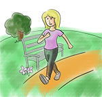

Module: Pain management
Afton L. Hassett, Psy.D. University of Michigan Medical School, Department of Anesthesiology
Resources
10 ways to find joy
Use this printout to find new ways to find joy in your life.
Printout PDFHappiness derived from within
Create a gratitude journal to keep an on-going list of all the things that make you happy and grateful in your life.
Printout PDFLink to audio relaxation exercise instructions for deep breathing exercises, guided imagery, and progressive muscle relaxation: https://fibroguide.med.umich.edu/fibro../modules.html. Click on “Relaxation” and then select “Relaxation audio exercises” in the box on the right marked “Added Features.”
“Ex” is for Exercise
Many studies have shown that exercise lessens pain and improves your ability to lead a fulfilling life. Exercise can be aerobic (such as swimming, walking, running, biking, and dancing) or more focused on increasing strength and flexibility (think lifting weights, yoga, Pilates or tai chi).
While exercise that is of high intensity and done several times a week seems to be best, you can also benefit from adding just a few steps each and every day. In other words, you do not need to go to a gym, run a 10K, or buy expensive equipment. You just need to increase your activity level a little each day. So take the stairs instead of the elevator, vacuum with more enthusiasm, and walk a little farther or at a quicker pace! See Module on Exercise.
Exercise To-Do List
Make a commitment to do something every day, but choose a program that is fun and doable. For example, set a goal to walk 1000 extra steps a day, take the stairs at work, and go to a dance class on the weekend. If the goal is too high, then set it slightly lower, such as 500 or 800 extra steps.
- You might want to get a pedometer or a fitness tracker. Pedometers can cost less than $5!
- Start your new activity program with a friend. You can cheer each other on or hold each other accountable.
- Check out free or low-cost activities in your area. The Arthritis Foundation has a great website where classes are listed by state.
- Remember to pick fun things to do, and feel free to change them up over time. If your exercise program is boring you probably won’t stick with it for long.
“P” is for Psychological Distress
Living with chronic illness is hard. A disease like scleroderma impacts every aspect of your life. Depression and anxiety are common in most chronic medical illnesses – the same is true for scleroderma. These feelings are not surprising or shameful and, more importantly, can greatly improve with treatment. Be certain to speak with your doctor if you think you have depression or anxiety. Both depression and anxiety can make your pain worse!
There are also many people with scleroderma who do not have full-blown depression or anxiety but who still feel distressed. Feelings of persistent stress, frustration, worry, and mild sadness are the hallmarks of psychological distress. Such distress can improve, and working on some of the ExPRESS categories can be a great place to start!
Psychological Distress To-Do List
If you think you have depression or anxiety, it is important to tell your doctor. To combat the common and mild feelings of distress:
- Get active! Bring more physical activity into your life (See the Exercise section and the Module on Exercise).
- Be sure you are eating well. Good nutrition can greatly impact your mood.
- Get enough sleep. Sleep, mood, and pain are all closely connected. If you sleep poorly, both your mood and pain can be worse. See the section on sleep later in this module.
- Confide in a friend, join a support group, become engaged in an online support community, or talk to a healthcare professional. Sharing your feelings can be a relief and can even help you make better sense of them. See the Module on Coping and body image/appearance for other ideas.
- Journal or write about your feelings and concerns. When you close your journal, choose to set those feelings aside for a while, or at least until you come back to your journal.
- Have some fun. Set aside time each day to do one thing you really enjoy. It can be just 10 minutes to meditate, 30 minutes for a cup of tea with your best friend, and an hour to take part in a hobby. When people are sick they often stop doing the things they enjoy most. You need to commit to bringing these things back into your life.
“R” is for Regaining Function
Pain is disruptive. Having pain that is so bad that you cannot even do simple tasks, fearing injury or making the pain worse, and feeling fatigued because pain kept you up last night are just three of the many ways pain can interfere with your life. One of the most important goals in successfully managing your pain is finding a way to do the things you want to do despite the pain.
You may not be able to do all the things you used to do, but you can find new ways to do many of these activities. You can also identify brand new activities to do now that things have changed.
Regaining Function To-Do List
- Choose an activity that you would like return to or improve your ability to do.
- Take gardening for an example.
- Identify one small, specific and easily achievable goal for the short term, such as gardening for 20 minutes at least once in the next week.
- Identify the roadblocks and brainstorm solutions. “My kids need to have supervision so I will ask my spouse to watch them so I can spend a few minutes in the garden.”
- Schedule time to do this thing as if it were an appointment with a doctor. “I will garden on Saturday afternoon starting at 4:00.”
- Do the activity and take time to really savor it.
- Set your next goal, keeping in mind to make that goal small, specific and easily achievable.
- Success builds on success!
“E” is for Emotional Well-being
Psychological distress and emotional well-being occur along a continuum. Reducing psychological distress only gets you back to a state of being without distress. That’s not the same as being happy. What’s equally important is enhancing your emotional well-being. People with high levels of emotional well-being (happiness) have less pain and better levels of functioning, and lead more fulfilling lives.
“Life, liberty and the pursuit of happiness” are in the US Declaration of Independence. Yes, you too should pursue happiness despite your illness. Of course, this is easier said than done. However, data suggest that at least 50% of happiness is choice. Choose to be happy.
Emotional Well-being To-Do List
There are many fun things you can do to improve your emotional well-being. Here are a few ideas that you can easily incorporate into your life. Try all three and then keep doing the one you like best.
- Gratitude. Start a gratitude diary. In a simple spiral notebook or a new beautiful journal, note three things each day for which you are grateful. It can be anything – your family, your health, the love of a pet. The trick is that these things have to be different every day, so they can be quite small – grateful that a friend called, or for hummingbirds, a sunset, or vanilla bean ice cream. Every day, keep your eyes open for life’s little treasures.
- Savoring or enjoying. Take the time to really notice and focus on the good things in your life. Every day for the next week, be sure to savor at least two experiences (for example, your morning coffee, a friend’s story, or a warm bath). Use all of your senses, then take a mental snapshot of the moment so you can remember it. Spend at least 3 minutes savoring each experience.
See the resource on “10 ways to Find Joy“.
- Positive Reflection. Keep a Positive Piggy Bank. Every evening, think about the people, things, or events that made you happy that day. Pick one of these and spend a moment savoring it. What made it so special to you? Now, write down this moment with enough detail that you can immediately recall what happened later. Next, fold up the piece of paper with your happy memory and drop it in the piggy bank. You will make these “deposits” in the same way every evening for 30 days. At the end of 30 days, you will “close your account.” This means that you will withdraw all of the slips of paper from your piggy bank and read the deposited happy memories. As you read them, try to recall details of the happy event and what made it so special to you at the time.
See the resource on “Happiness is defined from within“.
“S” is for Sleep
Sleep disturbances are common in scleroderma. Poor sleep and the symptoms of scleroderma–such as shortness of breath, indigestion, depressed mood, and pain–are closely associated. The direction of this relationship is not clear, but we do know that when people sleep better they have less pain.
Interestingly, sleep disturbances are common in healthy people, too. Thus, we know quite a bit about the things you can do to improve your sleep. Initially, it can be helpful to keep a sleep diary for one week. Note the time you go to bed, how long it takes for you to fall asleep, how many times you awaken and get up during the night, how long you sleep, and how you feel upon waking up (refreshed or still exhausted).
Sleep To-Do List
There are a number of things you can do to improve your sleep. Here are some suggestions:
- Get up and go to bed at about the same time every day.
- Do not take naps.
- Stay away from caffeine, nicotine, and alcohol 8 hours before bedtime.
- No exercise at least 4 hours before bedtime.
- Take a hot bath 90 minutes before bed (as your body’s core temperature drops, you become sleepy).
- Develop sleep rituals like having a light snack, brushing your teeth, setting an alarm, and reading a short story.
- The bedroom should be quiet, comfortable, and dark.
- The bed should be used only for sleeping (no pets, no eating, no doing bills).
- Go to bed only when you are feeling sleepy.
- If sleep does not come within 20 minutes, get up and do something boring, like reading a dull book, until sleepy.
- Do not clock watch – cover it if necessary!
See the Sleep section in the Module on Fatigue and Energy Conservation
“S” is for Stress Management
Chronic psychological stress can result in increased muscle tension, more negative emotions, greater sleep disturbances, and problems in relationships with your friends and family. All of these factors can lead to having more pain.
Thus, one of the most effective approaches to better managing your pain is not a drug, operation, or device. It’s learning how to better manage your stress including increasing your ability to relax and enjoy life despite the pain.
Stress Management To-Do List
Here are some things you can try to better manage day-to-day stress:
- Take a formal class in stress management, relaxation, meditation, tai chi, or yoga. Often such classes are free or offered at a low cost in public parks or at community colleges.
- Use online resources to learn and practice relaxation techniques.
- Click on the link below to find audio relaxation exercise instructions for deep breathing exercises, guided imagery, and progressive muscle relaxation here: https://fibroguide.med.umich.edu/fibro../modules.html
- Click on “Relaxation” and then select “Relaxation audio exercises” in the box on the right marked “Added Features.”
- Journaling or writing in a journal can also help you better cope with stress. Make notes about the things or people that are causing your stress. Identify your feelings about these people or events and know that it is OK to have negative feelings about the things and people you are supposed to love. Search for solutions and resources, and don’t forget to end your journal entry by noting something for which you are grateful.
Hop on the Pain Management ExPRESS!

As you listened to the other modules, hopefully you noticed that many of the ExPRESS factors are related to each other and even overlap. Taking care of yourself involves taking steps to improve several aspects of your life, but each factor you improve can impact another factor. It is thus possible to get much better as all of these factors interact with each other.
You just might find that your pain, mood, sleep, and ability to do the things you want to do improve rapidly with some focus and effort (e.g., daily dedication to doing at least two things to improve your ability to manage pain and have a fuller life).